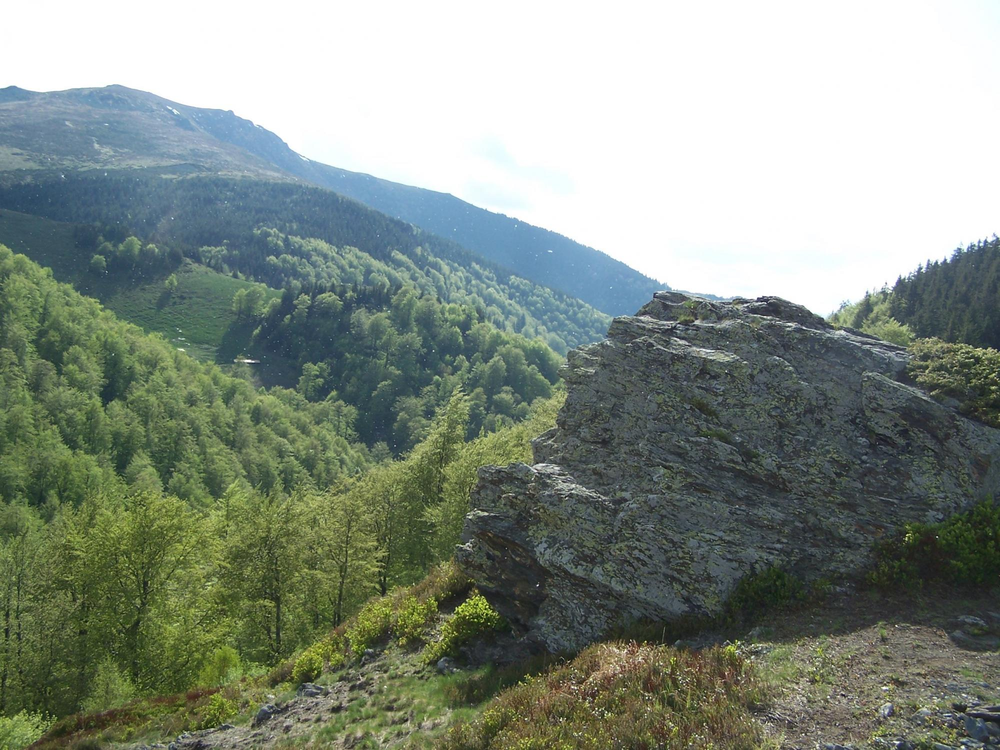
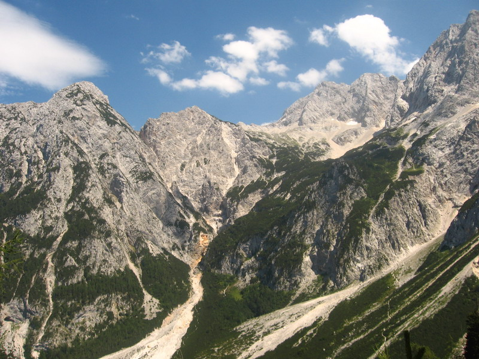

Csoportosításuk
.jpg "Hegység")
Tengerszint feletti magasságuk szerint
A szerzők többsége két típust különböztetünk meg:
Középhegységek 500–1500 méter között illetve
400–1500 méter között.
Magashegységek avagy havasok: 1500 méter felett.

Keletkezésük szerint
Gyűrthegységek: A hegyek többsége olyankor
keletkezik, amikor a földkéreg lemezei összeütköznek, és a lemezhatárok mentén a kőzetek
felgyűrődnek, majd megemelkednek. Az összetorlódó üledékes kőzetek közé intrúziók
nyomulnak
be.
Röghegységek: Földtani törésvonalak (vetődések)
hatására, azok között alakulnak ki. Lépcsős vetődés a táblás vidékeken a leggyakoribb,
ahol
a felszín folytonosan alacsonyodik a vetősíkok mentén. Árkos vetődés a két vető közötti
lesüllyedés; legismertebb jelenkori példája a Kelet-afrikai árok. Ennek fordítottja a
sasbérc, amikor a középső rög kiemelkedik a többi közül. Tektonikus medence keletkezhet
ott,
ahol a törésvonalak mentén nagy területen süllyednek le körkörösen ill. lépcsőzetesen a
belsőbb részek. A közbülső lesüllyedő rögök medencéket, árkokat hozhatnak létre. Ilyen
tájegység látható a franciaországi Vogézek vonulatain, a Kelet-Észak-Amerikában
található
Nagy-medence és Colorado-fennsík területén, illetve a Rajna vidékén.
Vulkáni hegységek: A tűzhányók jelentős része
kúpot
épít a felszínre törő hamuból és/vagy lávából. Az ilyen csúcsok olykor igen magasra
nőhetnek: az antarktiszi Mount Erebus nevű – ma is működő – tűzhányó például 4032 m
magas, a
Mauna Kea Hawaiin 4205 m. Így alakult ki például a Kilimandzsáró. Az
Andok több vulkánja 6000 méternél is magasabb; a Föld legmagasabb tűzhányója az Ojos del
Salado (6893 m).

Morfológiájuk szerint
Lánchegységek: A hegységképződés közben a
térszín gyorsabban emelkedik, mint ahogy a felszíni folyamatok lepusztítani képesek.
Ezért a lánchegységek lejtői meredekek, csúcsai magasak, gerincei csipkézettek.
Tipikusan ilyenek a Himalája, az Andok és az Alpok hegyvonulatai, amelyek két nagy,
fiatal rendszer:
Eurázsiai-hegységrendszer,
Cirkumpacifikus-hegységrendszer részei.
Gerinces hegységek (hegyláncok): Egy vonal
(gerinc) mentén elhelyezkedő hegyek sorozatai.
Röghegységek: A megemelkedett térszínt a víz
(erózió) és a szél (defláció) lepusztítja. A felszíni erők a szögletes, csipkézett
formákat lekerekítik. A hegyek lábainál vastag törmelékkúpok alakulnak ki. Európában
legismertebb rendszereik:
Kaledóniai-hegységrendszer,
Variszkuszi-hegységrendszer.
Hátságok:
Fennsíkok: tartósan 200 méter tengerszint
feletti magasságon elterülő, de kis relatív szintkülönbségű, tehát síkság jellegű tájak.
Masszívumok
Táblahegyek: A kiemelkedő rögöket borító
üledékes kőzetekbe a folyók mély kanyonokat vágnak. A folyóvölgyek között a
lepusztulásnak jobban ellenálló rétegek megóvják az eróziótól az alattuk települőket;
ezzel lapos táblákat alakítanak ki. Ilyen például az ausztráliai Blue-hegység, vagy a
dél-afrikai Fokváros közelében emelkedő Tábla-hegy.
Szigethegyek: Elszigetelt hegyek, amelyek
kiemelkednek a tájból. A többi részüket teljesen lekoptatta az erózió. Ilyen például az
ausztráliai Uluru (Ayers Rock), és így alakultak ki a görögországi Meteorák csúcsai is.
Legismertebb hazai példa a Badacsony.
Hegységek